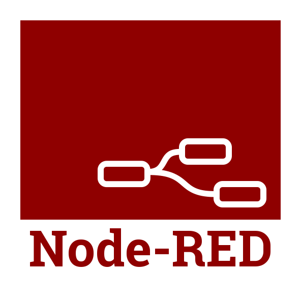

Technology
Over my many years of experience, I have worked with many applications and technologies. I also keep myself up to date with new concepts, learning at home using docker containers. I have included some of those below.

PowerPoint is like being trapped in the style of early Egyptian flatland cartoons rather than using the more effective tools of Renaissance visual representation.
Throughout my career, I have analysed diverse datasets, from
beverage sales in nightclubs to complex medical data in
consulting roles.
My experience spans multiple sectors, including logistics,
pharmaceuticals, advertising, and retail,
allowing me to develop a comprehensive understanding of how to leverage data for strategic
advantage.
I have
successfully integrated technologies such as digital voice assistants with video wall
dashboards and IoT data, creating
innovative solutions that enhance data usability and audience engagement.
Expert
Proficient
Proficient
Proficient
Expert
Expert
Designed and developed integrated solutions utilizing advanced
technologies such as LoRaWAN and IoT for various sectors.
Engineered
a field-based monitoring system to track the status of farm gates using
LoRaWAN communication, ensuring
accurate data transmission and device reliability.
Implemented
innovative data encoding and compression techniques for efficient
communications in IoT applications,
reducing data payload to 56 bytes per message.
Led the technical implementation of an innovative analytical
product for a UK Government client, coordinating with a
diverse team across multiple geographic locations.
Oversaw project
planning, reporting, resource allocation, and budgeting, ensuring alignment
with the client's
expectations and requirements.
Provided mentorship to junior
engineers on solution design, prototyping, and stakeholder presentations,
fostering a
culture of innovation and collaboration.
Led the deployment of SAP Analytics Cloud applications,
effectively integrating them into clients' existing BI
landscapes and strategy roadmaps.
Facilitated pre-sales activities,
emphasising the critical role of data analytics in achieving client
objectives, which
drove successful solution delivery.
Developed and implemented
innovative digital voice assistance solutions paired with large-scale
dashboards, enhancing
user experience and decision-making.
Led initiatives on Business Intelligence applications, providing
knowledge transfer to clients and internal teams to
enhance deployment effectiveness.
Developed expertise in key
technologies including ETL processes, data modelling, and analytics
platforms, contributing
to improved system performance and reporting
capabilities.
Collaborated in a global team to ensure seamless
customer migrations, while actively participating in product management
discussions and tool testing.
Accumulated over 10 years of diverse experience in the
hospitality and licensed trade sectors, developing a strong
foundation in business management principles and customer service
optimisation.
Demonstrated significant leadership by managing
high-turnover venues, earning three prestigious national promotions in
recognition of exemplary operational success and team
performance.
Advanced to a Head Office position responsible for data
analytics across 22 locations, where I implemented strategic
insights that significantly enhanced operational efficiency and
profitability.
I am always up for learning something new including; PCB design
and fabrication, IoT solutions (sensors, communication &
data analysis), lock picking, solving puzzles, graphic design, laser
engraving and cutting, business management and
e-commerce, LED lighting and electronics, cooking, arts and crafts, cyber
security.
I also volunteer at a local community theatre where I help
manage rotas, and
perform varied roles from duty manager to
confectionary seller.
I enjoy the outdoors and am often helping my
children understand and respect
nature, and how we can learn from it. As a
teenager I enjoyed orienteering and still have the navigational sense to
know how to get back, letting the children lead
the way.
I enjoy photography and should undertake it more often. In
the past I have
experimented with Infa-red and stereoscopic
images.
Pioneered the development of an interactive, touch-enabled dashboard
solution that facilitated in-depth analysis of key
service metrics for executive stakeholders during VIP engagements, significantly
enhancing the managerial oversight
capabilities.
Facilitated the design and deployment of tailored dashboards for
each executive director, leveraging faceted filtering
techniques to replace traditional hierarchical data drilling, thereby improving both
user experience and informed
decision-making processes.
Strategically integrated a digital voice assistant
(Alexa) with an SAP-based dashboard displayed on a substantial 80 sqm
16K screen, resulting in an innovative approach to data access and user interaction,
fostering a modernised data culture
within the organisation.
Spearheaded the design and deployment of a global dashboard that
innovatively transformed 54 KPIs into eight actionable
insights, achieved through meticulous data modelling strategies aimed at enhancing user
interactivity and system
performance.
Executed comprehensive performance testing strategies that combined
automated scripting with real user scenarios,
leading to significant performance optimisation by monitoring application responsiveness
in tandem with client-side
interaction.
Crafted and rolled out a detailed application security model that
complied with stringent export control regulations and
user access protocols, facilitating cross-departmental collaboration with suppliers to
ensure a smooth implementation
process.
Engineered and implemented detailed migration protocols, best
practices, and instructional resources, which empowered
clients to successfully navigate transitions from outdated SAP/Business Objects
platforms to the latest technologies,
ensuring minimal disruption and maximising operational efficiency.
Assumed the
role of technical lead in a diverse multinational team dedicated to global migrations;
provided expert
training in migration best practices to consultants in North America, Europe, and Asia,
thereby enhancing their skill
sets and ensuring project success.
Actively engaged in promoting
knowledge-sharing by delivering impactful presentations at numerous user and partner
conferences, while simultaneously ensuring the SAP certification test questions were
kept current and relevant in
alignment with migration processes.
Established the first BI Competency Centre for a Swiss multinational
healthcare company, focusing on SAP Analytics
solutions and incorporating best practices for compliance.
Designed and implemented a customized security model and lifecycle management
processes to ensure self-sufficiency and
operational efficiency for over 86,000 global users.
Collaborated with SAP Product Managers to develop and test migration strategies,
successfully executing a major system
upgrade in four increments, each with minimal downtime.
Streamlined the monthly report creation process for UK government
ministries by leveraging Web Intelligence, reducing
production time from two days to just a few hours.
It would take roughly two days to produce each pack,
allowing for the inclusion of pertinent commentary and meeting the strict month-end
closure deadlines.
Integrated existing Excel data rules into automated report
generation, ensuring accurate data representation and
incorporating necessary commentary directly within the reports.
Contributed to the analytics strategy by implementing cloud SaaS applications
while ensuring compliance with UK data
governance and sovereignty regulations.
Over my many years of experience, I have worked with many applications and technologies. I also keep myself up to date with new concepts, learning at home using docker containers. I have included some of those below.